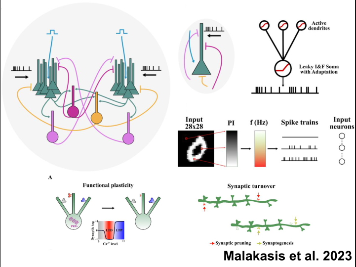
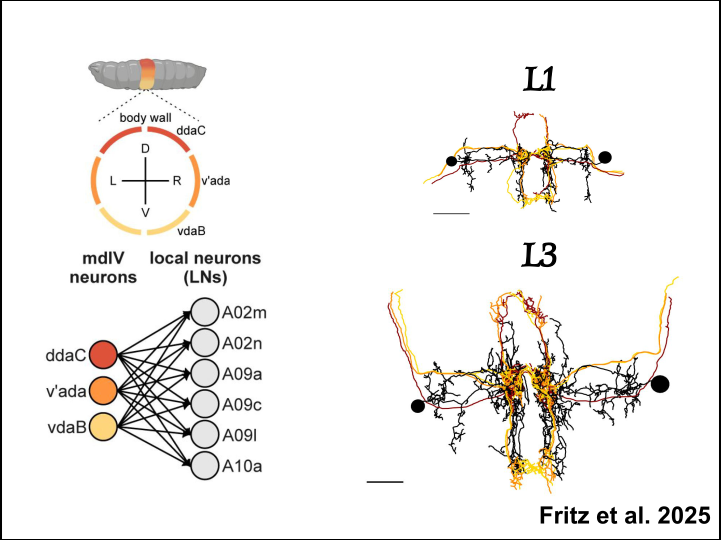
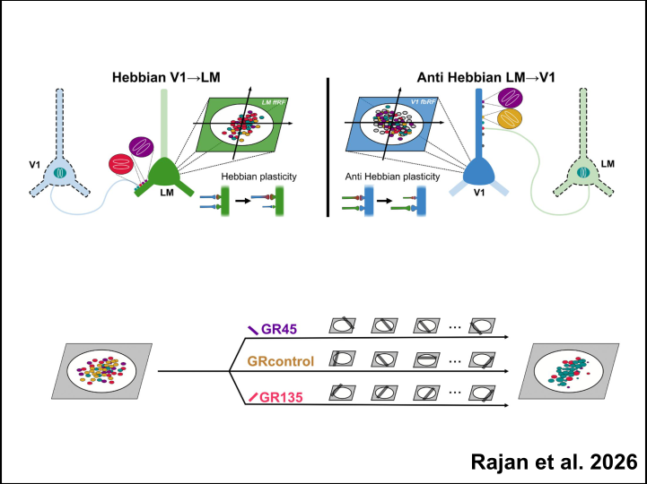
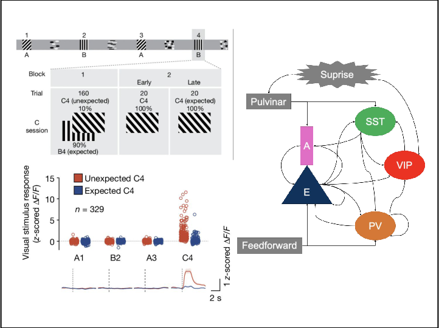
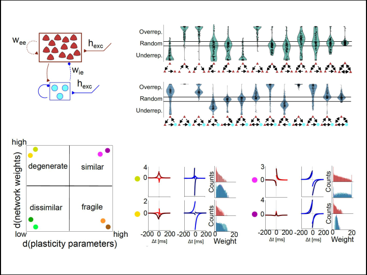
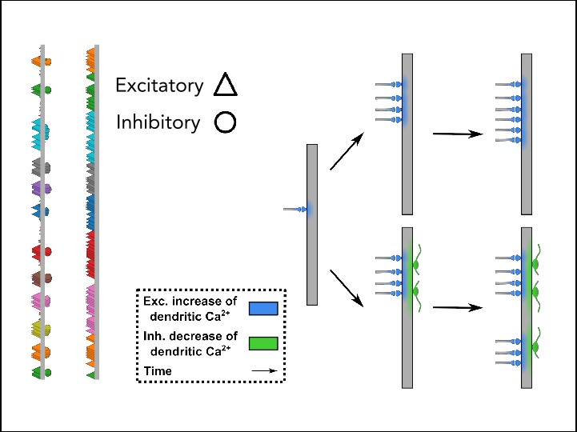
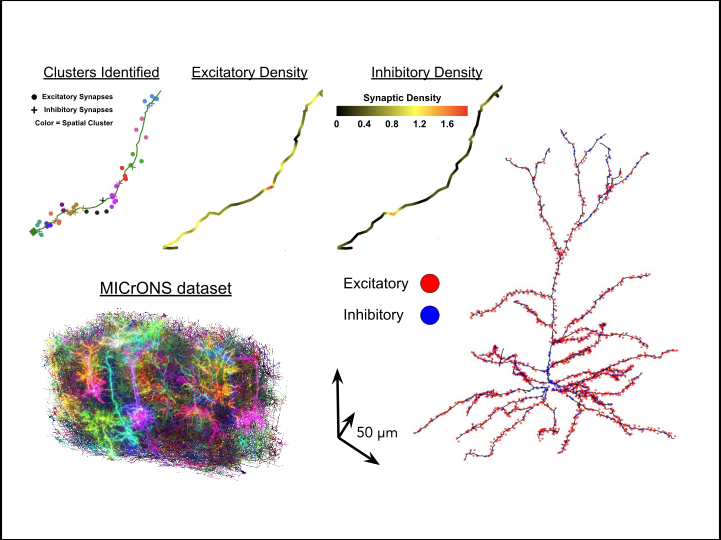

Malakasis et al. 2023
Synaptic turnover promotes efficient learning in bio-realistic spiking neural networks
How synaptic turnover and active dendrites lead to the formation of better image representations.
C++Spiking Neural NetworksImage Classification
↗

Fritz et al. 2025
Synaptic density and relative connectivity conservation maintain circuit stability across development
Comparative connectomics over Drosophila larvae development.
PythonConnectomicsData Analysis
↗

Rajan et al. 2026
Visual experience exerts an instructive role on cortical feedback inputs to the primary visual cortex
Built the model showing how opposing plasticity in feedforward and feedback pathways explains feedback remodeling.
PythonComputational ModellingSynaptic Plasticity
↗

In preparation
Circuit modeling of surprise amplification in the visual cortex
PythonCircuit Modelling
In progress

In preparation
A systematic analysis of meta-learned synaptic plasticity rules
PythonMeta-LearningMachine Learning
In progress

In preparation
The role of inhibition in shaping dendritic synaptic arrangement
PythonComputational ModellingDendrites
In progress

In preparation
Subcellular organisation analysis of excitatory and inhibitory synapses in MICrONS
PythonConnectomicsData Analysis
In progress